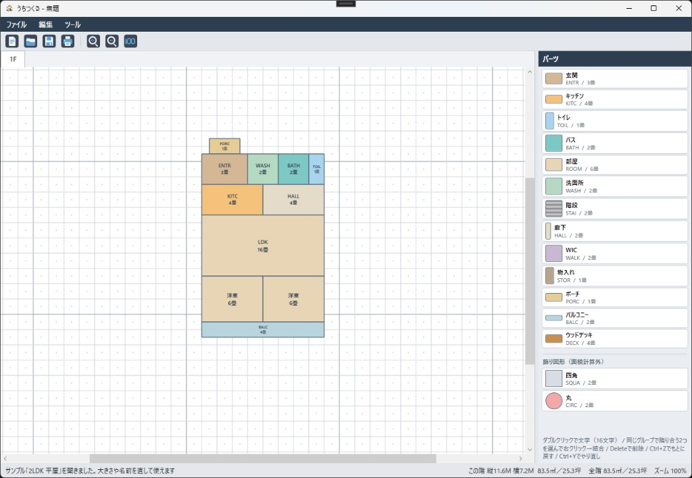
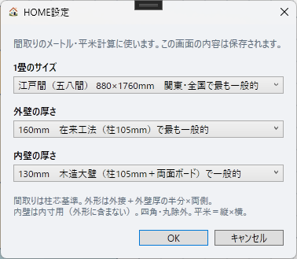

画面の見かた

- メニュー … ファイル／編集／ツール／説明書
- ツールバー … 新規・開く・保存・印刷、拡大・縮小・ズーム100%
- グリッド … 部屋を置くキャンバス。上のタブが階（1F、2F、3F）
- パーツ … 右側から選んでグリッドに置きます
- ステータスバー … 左は操作の案内、右はこの階と全階の縦・横・㎡・坪、ズーム
いちばん使う操作
必ず覚える2つ
ダブルクリックで文字入力（16文字まで）。部屋の名前やメモを書けます。
同じ種類で隣り合う2つを選んで、右クリック → 結合。LDKなどの大きな形にできます。
右側パーツ欄の下にも、同じ案内が出ています。
パーツを置く
- 右の一覧から部屋を選びます。
- グリッドの上に半透明のプレビューが出ます。クリックで置きます。
- Esc で選択を解除します。
部屋どうしは重なりません。置けない位置ではプレビューが置けない表示になります。
階段と飾り図形（四角・丸）は、他のパーツの上にも置けます。
最初の大きさ
| パーツ | 記号 | 初期サイズ |
|---|---|---|
| 玄関 | ENTR | 3畳 |
| キッチン | KITC | 4畳 |
| トイレ | TOIL | 1畳 |
| バス | BATH | 2畳 |
| 部屋 | ROOM | 6畳 |
| 洗面所 | WASH | 2畳 |
| 階段 | STAI | 2畳 |
| 廊下 | HALL | 2畳 |
| WIC | WALK | 2畳 |
| 物入れ | STOR | 1畳 |
| ポーチ | PORC | 1畳 |
| バルコニー | BALC | 2畳 |
| ウッドデッキ | DECK | 4畳 |
| 四角・丸 | SQUA / CIRC | 飾り（面積に含めない） |
1畳はマス2×4です。置いたあとに大きさを変えられます。
編集
動かす
置いたパーツをドラッグして移動します。他の部屋と重なる位置には動きません。
大きさを変える
- 1つ選ぶと四隅に□が出ます。ドラッグして拡大・縮小します。
- 右クリック → 寸法入力 で、縦・横をメートルで指定できます。左上が固定で、いちばん近いマスに合わせます。
- 結合して凹凸になった形は、四隅ドラッグでは変えられません。寸法入力すると長方形に戻ります。
文字を入れる
パーツをダブルクリックすると、文字を入力できます（16文字まで）。
空欄のままだと、記号と畳数が表示されます。階段と飾り図形は、文字を入れない限りラベルを出しません。
結合
同じ種類で辺が接している2つをクリックして選び、右クリック → 結合。
- 1つ目をクリック。
- 同じ種類の隣をクリック（2つともオレンジの選択になります）。
- 右クリックして「結合」。
種類が違う、離れている、飾り図形、のときは結合できません。L字など凹凸の形になります。
コピー・カット・ペースト
- 右クリック、または Ctrl+C コピー / Ctrl+X カット / Ctrl+V ペースト
- ペースト後はプレビューが出ます。クリックで貼り付け。Esc でやめます。
- 他の階のタブに切り替えて貼ることもできます。
削除
選んで Delete または Backspace。
もとに戻す・やり直し
Ctrl+Z でもとに戻す、Ctrl+Y または Ctrl+Shift+Z でやり直し。最大20回です。新しい操作をすると、やり直しの履歴は消えます。
階数
- 編集 → 階数追加 … 2F、3Fを足します（最大3階）。
- 編集 → 階数削除 … いちばん上の階を消します。確認が出ます。
- タブで階を切り替えます。
- 下の階の階段は、上の階にハッチで透けて表示されます（位置合わせ用）。
- 編集 → 中心に配置 … 全階の家をグリッドの中央へ動かします。
表示
- ツールバーの＋ / −、またはマウスホイールで拡大・縮小（20%〜400%）。
- 100 でズーム100%にし、家を画面の中央へ寄せます。
- マウス中ボタンをドラッグすると、グリッドを手で動かせます。
- 右のパーツ欄の幅は、境目をドラッグして変えられます。
ファイル
| 操作 | 場所 | キー |
|---|---|---|
| 新規作成 | ファイル／ツールバー | Ctrl+N |
| 開く | ファイル／ツールバー | Ctrl+O |
| 上書き保存 | ファイル／ツールバー | Ctrl+S |
| 別名保存 | ファイル | Ctrl+Shift+S |
| 終了 | ファイル | （ウィンドウを閉じる） |
保存形式は .uchi です。未保存の変更があるときは、新規・開く・サンプル・終了の前に確認します。
サンプル
ツール → サンプル から、2LDK 平屋、3LDK 2階を開けます。大きさや名前を直して使えます。
印刷
ファイル／ツールバーの印刷、または Ctrl+P。A4横です。
- 家の範囲だけを印刷します。グリッドは出しません。
- 1階は1ページ全面、2階は左右、3階は3分割。どの階も同じ縮尺です。
- 手書き余白のため、家の図は少し小さく（約8割）載せます。
- 各階に「nF」と、その階の参考寸法（縦・横・㎡・坪）を出します。
- 下の階の階段は、上の階のいちばん奥にハッチで印刷します。
- 1階の家の角（左上と右下）に白抜き○を、全階同じ位置に付けます。部屋の下にあり、角からはみ出した分が見えます。
HOME設定
Pro版のみ、ツール → HOME設定 で畳サイズと壁厚を変えられます。設定は間取りファイル（.uchi）に保存されます。
Free版では HOME設定は使えません。新規作成は初期値のままです。ファイルを開いたときは、そのファイルに入っている設定をそのまま使います。

- 1畳のサイズ … 江戸間・中京間・京間・団地間・メーターモジュール
- 外壁の厚さ … 外形（縦・横）に使います
- 内壁の厚さ … 部屋の内寸表示用。外形には含めません
間取りは柱の芯基準です。外形はパーツの外接（柱芯）に、外壁厚の半分を両側へ加えた値です。四角・丸は計算に含めません。平米は縦×横です。
画面右下の「この階」「全階」の数字も、この設定で変わります。
ショートカット一覧
| キー | 動作 |
|---|---|
| Ctrl+N | 新規作成 |
| Ctrl+O | 開く |
| Ctrl+S | 上書き保存 |
| Ctrl+Shift+S | 別名保存 |
| Ctrl+P | 印刷 |
| Ctrl+Z | もとに戻す |
| Ctrl+Y / Ctrl+Shift+Z | やり直し |
| Ctrl+C / X / V | コピー / カット / ペースト |
| Delete / Backspace | 削除 |
| Esc | 配置・貼り付け・パーツ選択を解除 |
| ホイール | 拡大・縮小 |
| マウス中ボタン | グリッドをつかんで移動 |
| ダブルクリック | 文字入力（16文字） |